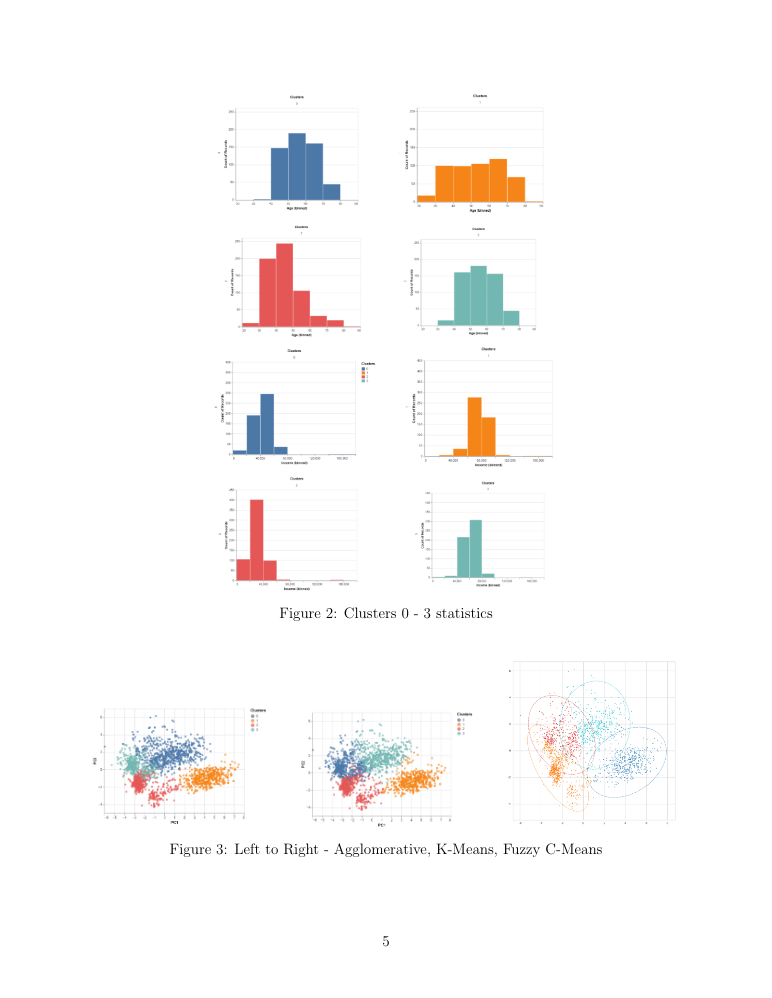

Overview
The goal of this project is to identify specific customer segments that purchase specific products. This is a critical strategy for sales marketing, as corporations need to be able to identify their audience.
Results/Evaluation
Before performing all of our unsupervised learning methods, the first thing we made sure todo was data cleaning and pre-processing. We dropped all rows that contained null values inthe Income column, reducing the number of data entries from 2240 to 2216 entries. Next,we performed feature engineering by modifying certain existing attributes and creating newfeatures using the given attributes. We simplified attributes that had repetitive values andremoved redundant attributes/columns. We created new features for the age of the cus-tomer, total spending across all the different products, total number of children, and familysize. During our data cleaning process, we created pairplots with notable attributes such asIncome and Age to identify potential outliers. A few outliers were visually identifiable, suchas income that was 600,000k or above and age that was over 90 years, so we removed themfrom the our cleaned dataset. Additionally, we encoded all of our categorical attributes usingthe label encoder and standardized our data.Along with the new features we created, there were over twenty different attributes in ourcleaned dataset. We created a heatmap for our dataset to visualize which attributes havehigh correlations with each other. We noticed that certain attributes did have relativelyhigh correlation with each other, such as income and the amount spent on wine purchases.When two attributes have high correlation, this means that one of them is redundant so we3 decided to perform dimensionality reduction using principal component analysis (PCA) tohelp us with feature selection. Using a Scree Plot and some trial and error, we found thatthe optimal number of principal components to include was three.To determine the optimal number of clusters for our clustering methods, we used the ElbowTechnique for K-Means clustering. Along with some trial and error, we found that havingfour clusters gave us the most evenly distributed clusters and least overlap between clusters;thus, we had four clusters for all three of our clustering methods.After running the different models, we created bar charts for multiple attributes to help usfind similarities between the customers in each cluster. Some of the bar charts used for theprofiling of the four clusters from K-Means clustering are shown in figures 1 and 2. We alsoplotted the consumption of the different product categories for each cluster in figure 4. Fromour results, the profiling of each cluster is as follows:•Cluster 0 are large families with middle aged parents often having multiple kids andteenagers. Having a large family leads to higher expenses.•Cluster 1 are mostly high earning single individuals or childless couples.•Cluster 2 are smaller families with lower earning young parents with mostly kids andvery few teenagers.•Cluster 3 are smaller families with high earning middle-aged parents and teenagers.
Both Agglomerative and Apriori methods identified Cluster 1 and Cluster 3 as the biggestconsumers. The difference was much larger in the Meat and Wines department.The Agglomerative, K-means, and Fuzzy C-means clustering methods all separated the datainto very similar clusters. The three clustering methods yielded similar results due to thedataset’s small size and uniformity. Nevertheless, we were able to pinpoint clear differencesbetween the three methods.The clusters yielded from Fuzzy C-means overlapped more so it’s more difficult to profilecompared to Agglomerative and K Means. Because customer segmentation relies on clearresults, Fuzzy C-means would not be the best to use.